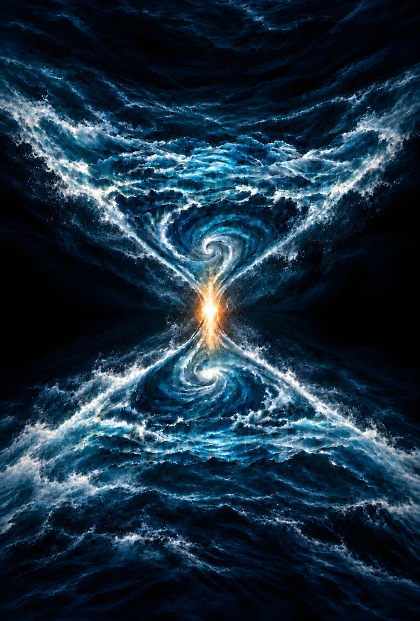

Obras en curso
Libros sin terminar.
Tres obras de no ficción y dos novelas, ninguna publicada todavía. La no ficción enuncia una teoría, expone cómo podría ponerse a prueba y se pregunta qué significa para una vida. Las novelas llevan una premisa tan lejos como dé de sí.
La no ficción y la ficción cumplen funciones distintas, y se mantienen separadas a propósito. Los libros de teoría etiquetan cada afirmación según lo bien respaldada que esté; las novelas siguen una premisa para ver qué significaría si fuera cierta. Las sinopsis de esta página describen la pregunta y la situación de partida de cada libro, no cómo terminan las historias. Los detalles cambiarán a medida que se revisen los libros.
No ficción · los libros de BIT

Biological Individuation Theory
(«Teoría de la individuación biológica») · Conciencia, vida y tú · manuscrito completo, en revisión
Nos hemos vuelto muy buenos describiendo lo que hacen los cerebros. Por debajo de ese trabajo queda una pregunta: ¿por qué se experimenta algo de todo ello, y por qué se experimenta como alguien? Este libro deja a un lado la primera pregunta y persigue la segunda: ¿qué fija el límite de un sujeto, mantiene unida su experiencia como una sola y la lleva adelante como la misma perspectiva a lo largo de décadas de cambio?
La propuesta, enunciada en su forma conservadora, es una hipótesis de investigación: el límite, la unidad y la continuidad de una perspectiva consciente individual dependen de la organización coordinada y automantenida del organismo vivo, y no quedan plenamente determinados por el procesamiento neuronal de la información considerado al margen de esa organización. Una forma más fuerte, la BIT fuerte, añade que el organismo quizá no genere la experiencia en absoluto, sino que la individúe, haciendo particular algo más amplio. El libro trata esto como especulación y lo mantiene tras un cortafuegos: la evidencia de que el organismo individúa la experiencia no es evidencia de que la experiencia exista al margen del organismo.
El libro está escrito para poder perder. Enuncia de antemano los resultados que lo debilitarían, etiqueta cada afirmación como establecida, hipótesis, especulativa o abierta, y alcanza una única conclusión, sostenida de forma presuntiva y no con certeza: puesto que el organismo vivo es el único portador de la continuidad de una persona que se ha demostrado jamás, la afirmación de que una persona sobrevive a su disolución irreversible debe presumirse falsa a menos que se demuestre la existencia de un portador independiente.
Temas explorados
- Por qué la conciencia es de alguien
- La vida antes de la conciencia: límite, automantenimiento, autopoiesis
- Una historia del observador, de los griegos a la física
- La apertura biológica y la pila de individuación
- La identidad a través del cambio; copias, cargas de la mente y continuidad
- Agencia, elección y libre albedrío; la soberanía de la trayectoria
- El tiempo y el presente individuado
- Cuándo empieza el observador
- Mentes sintéticas e híbridas
- Anomalías en el límite, sopesadas
- La muerte, la persistencia y los extremos abiertos
- Qué contaría en contra de la teoría
Someone Here, Now — Measured
(«Alguien aquí, ahora — medido») · El programa de investigación de la teoría de la individuación biológica · borrador completo, sometido a revisión
¿Cómo podría perder una teoría de la conciencia? Biological Individuation Theory se preguntaba por qué la experiencia es de alguien y proponía que el organismo vivo es parte de la respuesta. Este volumen complementario se pregunta cómo podría demostrarse que esa propuesta es errónea.
Construye los instrumentos que la teoría necesita: un perfil para la organización de un cuerpo vivo y otro para la organización de la experiencia. Fija de antemano el modelo neuronal que la teoría debe superar, y el margen por el que debe superarlo. Después plantea dos preguntas por turno: ¿predice el cuerpo la experiencia más allá del cerebro, y se moldean el uno al otro? Los estudios propuestos van desde la localización experimentada del yo y la unidad en el cerebro dividido, pasando por la meditación, los psicodélicos, la anestesia y los trastornos de la conciencia, hasta el desarrollo, otros organismos y los sistemas sintéticos. Sus partes se ordenan según lo preparada que esté cada prueba, no por temas.
Tras un cortafuegos explícito, reglas más estrictas rigen las afirmaciones que más las necesitan: objetivos ocultos para las experiencias cercanas a la muerte, aprendizaje nuevo al final de la vida y pruebas de portador para cualquier afirmación de que una persona sobrevive. El libro propone mediciones y no informa de ninguna; ninguno de sus estudios se ha llevado a cabo todavía.
Temas explorados
- Una teoría que no puede perder no ha sido puesta a prueba
- Primero la predicción, después la constitución
- Prerregistro y márgenes fijados de antemano
- Colaboración adversarial con teorías rivales
- Medir un cuerpo vivo y medir una experiencia
- Los resultados nulos cuentan; replicación antes que ontología
- Ética de la investigación con posibles sujetos
- Las afirmaciones de anomalía, en cuarentena
Someone Here for a While
(«Alguien aquí por un tiempo») · Sentido, mortalidad y los extremos abiertos · manuscrito v2.0, en revisión
El más personal de los tres. Donde el libro de teoría argumenta, este reflexiona: un libro en primera persona, escrito desde la vida de un médico, sobre lo que significa ser alguien durante un tiempo. No es una guía clínica ni una revisión de la literatura, y se apoya en los argumentos de Biological Individuation Theory con ligereza en lugar de repetirlos.
Sostiene tres afirmaciones con tres grados de fuerza: una hipótesis cuidadosa, que el cuerpo vivo reúne la experiencia en un solo yo; una especulación mantenida a distancia, que el cuerpo quizá reúna la experiencia a partir de algo más amplio; y una conclusión sobre las personas, que lo único que se ha demostrado jamás que lleve a una persona a través del tiempo es el propio cuerpo vivo. Sigue esa conclusión hasta donde conduce respecto a la muerte, sin un consuelo que no pueda sostener. Su advertencia central es contra la sustitución: dejar que algo que continúa — un recuerdo, un legado, una copia, «la conciencia en general» — ocupe el lugar de la persona que quizá no continúe. En sus propias palabras: la pregunta merece indagación; la persona merece más.
Temas explorados
- La apertura en primera persona
- Ser visto por alguien; amor sin posesión
- Lo particular y lo insustituible
- Sentido sin garantía
- El miedo a la inexistencia; el duelo como conocimiento
- Descendientes, copias y continuadores
- El alma de Aristóteles como forma de un cuerpo vivo
- Esperanza sin certeza; la atención como práctica mortal
Ficción
Worldlines
(«Líneas de universo») · Una novela · borrador completo, en revisión
A las 3:04 de la madrugada, en un hospital del VA en Boise en 2035, un veterano de noventa y un años que lleva dos sin hablar empieza a describir un parto — con la voz de su difunta esposa, desde una sala de partos en la que nunca le dejaron entrar. Por la mañana ha muerto, y su hijo confirma detalles que solo su madre podía haber conocido.
La doctora Sophia Huxley, hospitalista del turno de noche y bisnieta de Aldous Huxley, anota cada palabra. La pista la lleva hasta un físico caído en desgracia, un ingeniero noruego que solo se fía del lápiz, y QUICK: una máquina cuántica construida para encontrar recuerdos en el tejido del espacio-tiempo, que no puede recordarse a sí misma. Si el pasado es permanente, los recuerdos no se almacenan; se direccionan. Entonces una empresa empieza a vender a familias en duelo visitas a sus muertos.
Premisa de la novela El libro se construye sobre el universo en bloque de la relatividad, en el que los momentos pasados siguen siendo reales, y se toma una única libertad deliberada con la física conocida, que su epílogo nombra con claridad: que un momento pueda alcanzarse y leerse. Todo lo demás en lo que se apoya — el teorema de no clonación, las teorías de la memoria, la lucidez terminal — lo señala como real o como disputado.
Temas explorados
- Memoria, duelo y consentimiento
- Si los muertos tienen derecho a no ser leídos
- Permanencia frente a acceso
- La identidad como la clave, no como el contenido
- Determinismo: si el futuro ya está fijado, ¿qué es una decisión?
- Una máquina que puede leer todos los pasados salvo el suyo
- Olvidar y recordar: Lete y Mnemósine
Proper Time
(«Tiempo propio») · Una novela · secuela de Worldlines · en preparación: mundo y esquema definidos, redacción aún no iniciada
Boise, 2046. Naomi Murphy, tanatóloga musical que toca el arpa junto a la cabecera de los moribundos, está tocando para su propia madre cuando la anciana, sumida desde hace años en la demencia, despierta plenamente lúcida durante una hora, la llama por un nombre de infancia que nadie ha usado en décadas y tararea una melodía que Naomi no ha oído nunca. Dos días después su madre ha muerto.
Naomi empieza a notar que los episodios de lucidez se agrupan en ciertas plantas del hospital. Una niña de tres años dice que antes «era» otra persona. Y un médico le explica que una mente podría viajar como luz — y le muestra a Naomi un registro que sugiere que alguien llegó al interior de la última hora lúcida de su madre.
Premisa de la novela Ambientada en el mismo universo en bloque único que Worldlines, la novela añade una ruptura deliberada más con la física — mentes que pueden viajar como luz — y la nombrará en su epílogo, como hace su predecesora.
Temas explorados
- Fijado no es forzado: la agencia en un universo en bloque
- Encontrar sentido en elecciones que siempre estuvieron fijadas
- La agencia después del conocimiento
- Memoria y yo: ¿quién eres cuando tu yo más reciente es el primero en irse?
- Música junto a la cabecera de los moribundos
- ¿Dónde quieres morir?